Lesson 2 · Part 1 · The model · 5 questions
How the next token is chosen
Read first: Tokens and the context window
A model doesn't pick the next word. It gives a probability to every token it knows, and then a dice roll picks one. That roll is why the same prompt gives a different answer, and the same ticket a different diff, every time you run it.
The idea
Think of the word suggestions above your phone keyboard. It offers three words, ranked. Now imagine that instead of always taking the first one, you roll a weighted die: the top word wins most often, but sometimes the second or third one does. Do that for every word of a message and you get a slightly different message each time.
A language model writes exactly like that, one token at a time:
- Score. The model reads everything in the context and gives a score to every token in its vocabulary, all of them, not just a few good ones. These raw scores are called logits.
- Turn scores into probabilities. A function called softmax turns the scores into probabilities that add up to 100%. A higher score means a higher chance.
- Pick. A small program called the sampler picks one token at random, weighted by those probabilities. This is sampling.
- Repeat. The picked token is added to the context, and the model scores the next position, now taking that token into account.

The key thing is step 4. Each pick changes everything after it. If the third token of a plan is "retry" in one run and "timeout" in another, the two runs are now answering slightly different questions, and they drift further apart with every token. In an agent, the drift is bigger still: a different first step means different files read, different tool results, and a different diff at the end.
Up close
Two settings change how the die is weighted. Both act on the probabilities before the pick:
- Temperature sharpens or flattens the probabilities. Below 1, likely tokens get more likely and unlikely ones fade away. Above 1, the field evens out and rare tokens get a real chance. At 0, the sampler just takes the top token every time. That is called greedy decoding.
- Top-p (also called nucleus sampling) drops the long tail. It keeps the smallest group of top tokens whose probabilities add up to p, say 0.9, and throws the rest away. The model's vocabulary has tens of thousands of tokens, and most of them are nonsense in any given spot. Top-p, introduced in a 2019 paper by Ari Holtzman and colleagues, makes sure none of that nonsense can win the roll.
Some APIs also have top-k: keep only the k most likely tokens. Here is the whole sampler in a few lines of Python:
import math
import random
def sample(scores, t=1.0, top_p=1.0):
# scores: {token: logit}
if t == 0: # greedy
return max(scores,
key=scores.get)
m = max(scores.values())
w = {k: math.exp((v - m) / t)
for k, v in scores.items()}
total = sum(w.values())
probs = sorted(
((p / total, k)
for k, p in w.items()),
reverse=True)
# top-p: keep the head only
keep, acc = [], 0.0
for p, k in probs:
keep.append((p, k))
acc += p
if acc >= top_p:
break
ps, ks = zip(*keep)
return random.choices(
ks, weights=ps)[0]Dividing the scores by t is the whole trick. A small t stretches the gaps between scores, so the leader pulls away. A large t squeezes them together.
Many newer APIs won't let you set these at all. On Anthropic's API, Claude Opus 4.7 and later models return a 400 error if you send temperature, top_p or top_k; the docs say to remove them and steer the model with the prompt instead. OpenAI's reasoning models have the same rule: when reasoning is on, remove temperature and top_p. The vendors don't publish their full reasons. What you control instead is the prompt and the effort level (see Thinking and effort levels). Open-weight models that you run yourself still give you every knob.
Worked example
An agent has written "The fix is to add a" and is choosing the next token. Say the model's probabilities are: retry 50%, timeout 30%, lock 12%, cache 5%, and the last 3% spread thinly over 3,000 unlikely tokens. Here is what each setting does to the odds:
| Token | t=1 | t=0.5 | t=1.5 | top-p 0.9 |
|---|---|---|---|---|
| retry | 50% | 70% | 22% | 54% |
| timeout | 30% | 25% | 16% | 33% |
| lock | 12% | 4% | 9% | 13% |
| cache | 5% | 1% | 5% | 0% |
| 3,000 others | 3% | ~0% | 49% | 0% |
Low temperature makes the favourite stronger. High temperature is the surprise: each junk token is still unlikely, but there are 3,000 of them, so together they now win about half the time. That is why a "creative" temperature quickly turns into made-up words. Top-p 0.9 keeps retry, timeout and lock (92% together), drops everything else, and scales the three back up to 100%.
Your turn
Question 1 · ~2 min
You give an agent the same ticket twice, in two fresh sessions, with the same repo and the same prompt. You get two different diffs. One passes the tests; the other fails one. Is something broken?
Show answer
No. That is sampling. Every token is a weighted random pick, and an early difference (a different file read first, a different plan) grows into a different diff. Each run is one draw from many possible results. So judge an agent setup by how often it succeeds over several runs, and let the tests decide which diff is correct, not how the code looks.
Question 2 · ~2 min
A teammate changes the team's agent instructions, runs one task, and gets a clean PR. Before the change, the same task failed once. "The new instructions work," they say. Do you agree?
Show answer
Not yet. One run before and one run after is two dice rolls. The old instructions might pass 6 times out of 10 and the new ones 5 times out of 10, and you would still see exactly this about one time in five. Run the task a few times with each version before deciding. With a big task, even two runs each tell you much more than one.
Question 3 · ~2 min
Your team's code review bot sends temperature=0 "to make reviews consistent". After switching it to a newer Claude model, every request fails with a 400 error. What do you do?
Show answer
Remove the parameter. Newer Claude models reject temperature, top_p and top_k. Get consistency some other way: a clear checklist in the prompt, a fixed output format (structured outputs or a JSON schema), and checks in code on the result. Anthropic's docs add that temperature = 0 never guaranteed identical outputs anyway.
Question 4 · ~3 min
You run an open-weight model on your own server with temperature 0. Alone on your laptop, the same prompt gives the same answer every time. In production, with many users, the same prompt sometimes gives a different answer. How, if there's no randomness?
Hint
Show answer
Your request is batched with other people's. Servers run many requests together on the GPU, and how many depends on the load at that moment. With a different batch size, the GPU adds up the same numbers in a different order, and floating-point sums can round differently. A tiny change in a score can flip which token is top, and then the texts drift apart. In 2025, Thinking Machines Lab ran one prompt 1,000 times at temperature 0 and got 80 different completions. They were the same for the first 102 tokens, then split at token 103. With special "batch-invariant" GPU code, all 1,000 matched, but it ran noticeably slower.
Question 5 · ~3 min
Stretch: you add a feature that asks a model to summarise a support ticket as JSON. Your test saves one good output and asserts that every new output matches it exactly. The test is flaky. What should it check instead?
Show answer
Properties, not exact text. Check what must always be true: the output parses as JSON, matches the schema, has the right ticket ID, stays under a length limit, and mentions the product named in the ticket. For quality, run a small set of examples several times and require a pass rate, such as 9 out of 10. Exact-match tests fight sampling, and sampling wins.
Interesting fact: Why it's called temperature
The word comes from 19th-century physics. Ludwig Boltzmann described how the particles of a gas share out energy: at temperature T, a state with energy E has a probability proportional to e−E/kT. Cold, almost everything sits in the lowest-energy state. Hot, all states become nearly equally likely. Softmax with a temperature is the same formula, with a token's score in place of minus its energy. In 1983, Scott Kirkpatrick and colleagues at IBM borrowed it to design computers: their "simulated annealing" placed and wired chips by starting "hot" and cooling slowly, like metal being annealed. In 1985, Geoffrey Hinton, David Ackley and Terrence Sejnowski built the "Boltzmann machine", a neural network named after Boltzmann. In 2024 Hinton shared the Nobel Prize in Physics with John Hopfield, and the Nobel committee pointed to the Boltzmann machine's use of statistical physics.
Facts checked: November 2026 (Anthropic and OpenAI API docs; Holtzman et al., ICLR 2020; Thinking Machines Lab, 2025; Kirkpatrick et al., Science, 1983; Nobel Prize in Physics 2024).
Answers
- Question 1
No. That is sampling. Every token is a weighted random pick, and an early difference (a different file read first, a different plan) grows into a different diff. Each run is one draw from many possible results. So judge an agent setup by how often it succeeds over several runs, and let the tests decide which diff is correct, not how the code looks.
- Question 2
Not yet. One run before and one run after is two dice rolls. The old instructions might pass 6 times out of 10 and the new ones 5 times out of 10, and you would still see exactly this about one time in five. Run the task a few times with each version before deciding. With a big task, even two runs each tell you much more than one.
- Question 3
Remove the parameter. Newer Claude models reject
temperature,top_pandtop_k. Get consistency some other way: a clear checklist in the prompt, a fixed output format (structured outputs or a JSON schema), and checks in code on the result. Anthropic's docs add thattemperature = 0never guaranteed identical outputs anyway. - Question 4
Your request is batched with other people's. Servers run many requests together on the GPU, and how many depends on the load at that moment. With a different batch size, the GPU adds up the same numbers in a different order, and floating-point sums can round differently. A tiny change in a score can flip which token is top, and then the texts drift apart. In 2025, Thinking Machines Lab ran one prompt 1,000 times at temperature 0 and got 80 different completions. They were the same for the first 102 tokens, then split at token 103. With special "batch-invariant" GPU code, all 1,000 matched, but it ran noticeably slower.
- Question 5
Properties, not exact text. Check what must always be true: the output parses as JSON, matches the schema, has the right ticket ID, stays under a length limit, and mentions the product named in the ticket. For quality, run a small set of examples several times and require a pass rate, such as 9 out of 10. Exact-match tests fight sampling, and sampling wins.